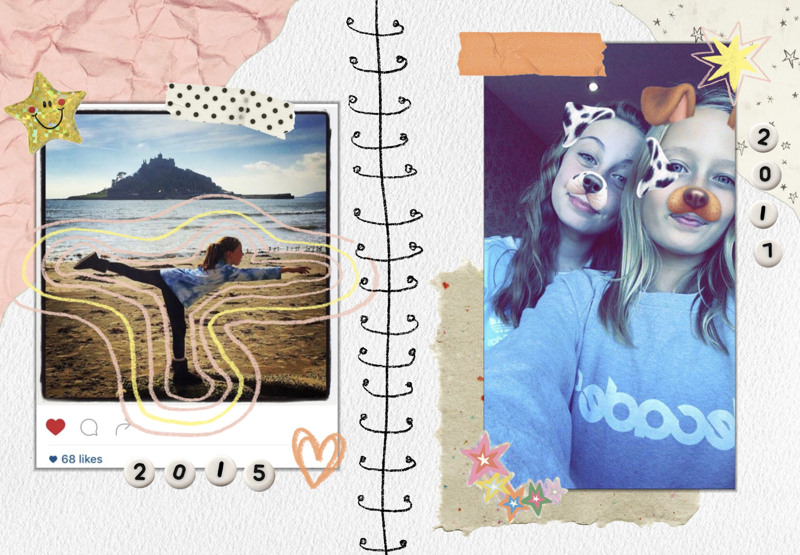

Social Media · Youth Wellbeing · Digital Policy
What large-scale data reveals about social media, personal risk factors, and the limits of platform bans for children under 16 in the UK (and beyond).
Last December, Australia implemented a world's-first law banning social media for under-16s.1The “Online Safety Amendment (Social Media Minimum Age) Bill 2024” bans all major platforms (including Instagram, TikTok, Snapchat, X, YouTube, Facebook) for minors under 16. It sparked global debate, and many countries are considering following suit. Laws such as the UK's Online Safety Act have failed to sufficiently protect children in the online realm. Public pressure is mounting, fueling calls for an Australian style ban in the UK.
As a 21-year-old,2In this story, 'me' refers to Honor Butler from Surrey, UK. I am an Erasmus Mundus Journalism Master's student at Aarhus University's Danish School of Media and Journalism. I have been an active user of social media for over half my life, and the reality constructed by the ban's supporters is far different from my lived experience. Based on longitudinal childhood data, I question whether children will be better off if social media is banned.
I made a secondary account where I posted pictures of nail designs. It was super innocent and friends of mine had similar profiles, with one posting cake designs.
“I didn’t overly worry”, my mum Fiona says, “I was of the mindset that throughout life I have seen parents who are really strict with their children and don’t let them have stuff, those are the children that when they get it seem to gorge on it.”
Even among experts, the debate is far from settled. Decades of research show mixed results, varying by what is measured, how, and in whom. The EU's Joint Research Centre warns of "inconsistent findings," unreliable self-reports and a near-total absence of causal evidence.
Part of the problem lies in the definitions: what constitutes "use" and what constitutes "social media"? Which platforms count, and does scrolling alone equal use, or only active engagement? Katrine Tølbøll4She is a PhD student in the Department of Political Science at Aarhus University, where she is researching the well-being of young people and the effect that digital platforms and media consumption have on their mental health over time., PhD student at Aarhus University, described it to us like this: "Are you watching cute cat videos or stalking your ex-boyfriend? These are different experiences but collapse into the same thing, which makes it very hard to research."
I was a busy child and teen. I did lots of sports and spent six hours at theatre school on Saturdays.
“We could afford for you to have a lot of extracurricular activities. I totally appreciate that lots of families can’t afford that. You feel differently if your child goes on their phone in the afternoon if they have done 3 hours of netball in the morning”, my mum says. She noted the importance of balance between real-world activities and screen time.
She noted the importance of balance between real-world activities and screen time. But the digital world is a different place today. "I think it is a mind-blowing area and I'm happy I don't have kids of that age now."

An Instagram Post I made in circa 2015 and a Snapchat selfie I took with a friend in 2017
Looking at the panel data in which I fit into, it is clear how different variables cause different outcomes for other teens in years 2015–2019.
The Understanding Society" longitudinal household survey"5Longitudinal data means the same children were surveyed every year. We split the data into two groups to enable us to observe changes within individuals. Panel 1: 2010–2014; Panel 2: 2015–2019. asked children aged 10–15 a wide variety of questions about their life, emotional state, behaviour and family every year from 2010–2024. With this data we can get a robust and complete snapshot of what life was like for children in those years.
If we compare children who turned 10 in 2010 with children who turned 10 in 2015, those in the later years tend to use more social media as they get older and they see a sharper drop in their self-reported happiness.
Note: social media is measured here by time spent. This does not necessarily equate to problematic use — an important distinction we return to below.
But what happens to social media usage and happiness among years 2010–2014 and 2015–2019 when other factors are added? By examining how different factors combine we get more of an idea of how they impact how social media use influences a child's happiness.
The combination of being a girl and using more social media has more of a negative impact on happiness than it does for boys. This effect is even stronger for the children who were 10 in 2015, which lines up with how the social media sphere became more gendered in later years.
Health remains a clear influence. In an ideal world we would see exactly how different conditions, physical and psychological, play a role. But this is simply not possible with children's data; it is too sensitive to capture with the specificity we need.
Our findings show psychosocial factors changing the relationship between self-reported happiness and social media use. Findings we can draw contextual inference from, while acknowledging the limitations of what observational data can tell us.
Personal traits and life circumstances shape how young people experience social media; the platform itself is not decisive. It reflects and amplifies existing vulnerabilities rather than creating them, intensifying what is already there. The same scroll that leaves one teenager feeling connected can leave another feeling isolated.
Not only is not all use equal, but children are also not equally at risk of being heavily affected. Problematic use — compulsive behaviour disrupting sleep, school and relationships — is linked not just to screen time, but to pre-existing factors like poor mental health, neurodivergence and adverse experiences. The child most at risk is not the average user. They are a child already struggling before they open an app.
"Bans don't really work on problematic social media use. They're so addicted they will find a way around it. It will be the ordinary kid affected, the one who is doing pretty decent."
— Katrine Tølbøll, Aarhus UniversityThis issue has been raised by scientists and children's organisations. UNICEF warns that age-based restrictions are unlikely on their own to drive the changes the technology industry needs to make, and risk failing to account for the diversity among children and varying circumstances. A ban, as Professor Sonia Livingstone from the London School of Economics and Political Science argues, "leaves the exploitative algorithmic and data practices" of big platforms untouched. The responsibility will shift away from the companies that profit from these platforms.
Pushing under-16s off mainstream platforms does not make them safer, it may redirect them toward "darker, unregulated corners of the internet" with fewer protections, the NSPCC6British children's rights organisation "The National Society for the Prevention of Cruelty to Children". warns. "[...] A blanket ban could [...] leave teenagers unprepared when they do come online", education minister Olivia Bailey told the Guardian.
The question is not whether children need better protection online. They do. The question is if an age-based ban is the correct response to a problem the evidence tells us is far more nuanced than that.
The evidence points toward a different set of priorities. Algorithms need to be regulated, not just the age children can access them. As Katrine Tølbøll argues: "Some of the algorithms are way too powerful [...] many of them are created to become addictive and make people engage in problematic use with social media." The 5Rights Foundation7A children's rights organisation that advocates for children's rights in the digital world. told the Guardian social media companies must not be "let off the hook" by a ban which many children are likely to dodge.
The UK already has good legislation in the Online Safety Act, that targets platforms, but it has not been implemented correctly.
UNICEF calls for a "smart mix" of measures: platform-level regulation, algorithm transparency, and crucially, children themselves being included in decisions that affect them. Implementing bans without consulting children may itself violate their rights under Article 12 of the UN Convention on the Rights of the Child.
Social media is not the cause. What it reveals, a ban cannot fix.